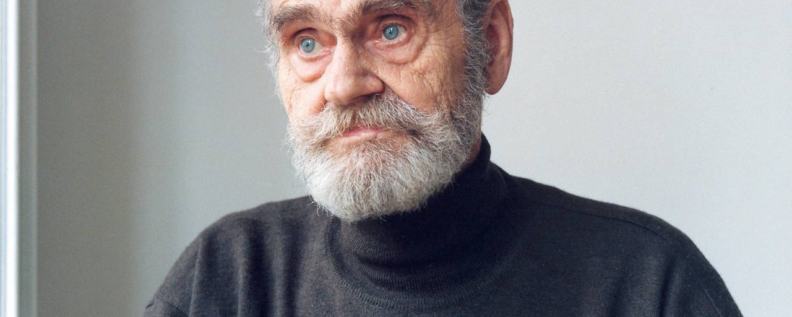
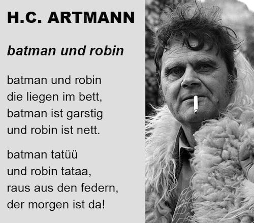
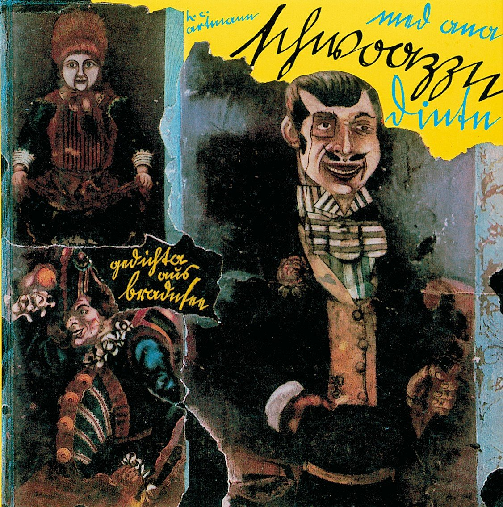
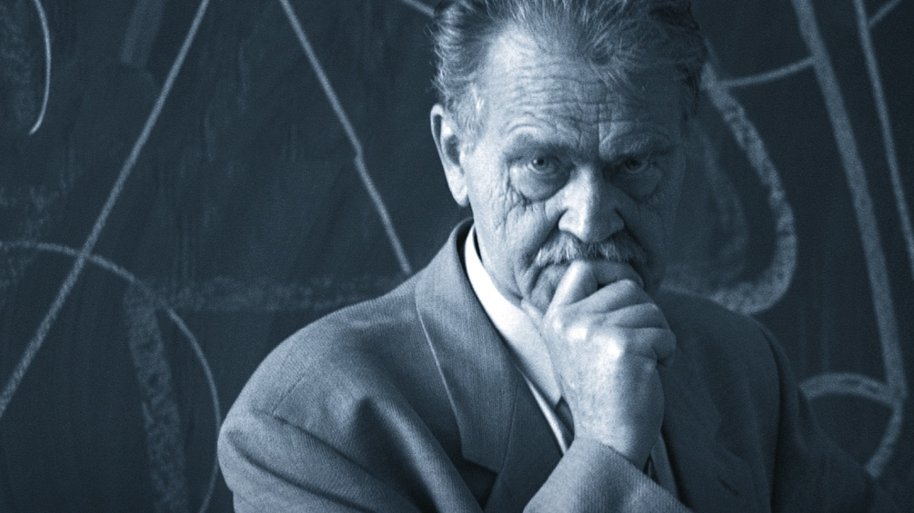

H. C. Artmann
denn dichten ist ein barfüßiger vorgang.“
Kindheit & Jugend
Hans Carl Artmann wird am 12. Juni 1921 in Wien-Breitensee, Kienmayergasse 43, als Sohn des Schuhmachers Johann Artmann und seiner Frau Marie (geb. Schneider) geboren.
Er wächst in einem Handwerkerviertel auf, in dem er früh mit Fremdsprachen in Berührung kommt — besonders mit dem Tschechischen der Nachbarn. Nach dem Hauptschulabschluss arbeitet er als Büropraktikant.
Interaktiv: In der Street View links kannst du das Geburtshaus in der Kienmayergasse 43 erkunden. Schau dir die Inschrift neben der Haustür genauer an — sie erzählt ihre eigene Geschichte.
Krieg & Verwundung
1940 wird Artmann zur Deutschen Wehrmacht eingezogen. 1941 erleidet er eine schwere Kriegsverletzung an der Ostfront und wird in ein Strafbataillon versetzt.
1945 gerät er in amerikanische Kriegsgefangenschaft. Schon während der Militärzeit widmet er sich dem Schreiben — eine Flucht in die Sprache aus der Brutalität des Krieges.
Nach Kriegsende arbeitet er als Übersetzer für die alliierten Truppen — ein Zeichen seiner außergewöhnlichen Sprachbegabung.
Literarische Anfänge
1947 erscheint seine erste Lyrikveröffentlichung im Radio Wien. Er entdeckt den Dadaismus, japanische Haiku-Dichtung und mittelalterliche Balladen als Inspirationsquellen.
1951 tritt er dem Art-Club bei, der wichtigsten Künstlervereinigung im Nachkriegs-Wien. Ab 1952 arbeitet er eng mit Gerhard Rühm und Konrad Bayer zusammen.

Die Wiener Gruppe
Um 1953 gründet Artmann die legendäre Wiener Gruppe — eine Avantgarde-Bewegung, die die deutschsprachige Literatur revolutioniert. Mitglieder: Friedrich Achleitner, Konrad Bayer, Gerhard Rühm und Oswald Wiener.
Die Gruppe experimentiert radikal mit Sprache, Form und Performance. Artmann verlässt die Gruppe 1958, im selben Jahr seines größten Erfolges.

med ana schwoazzn dintn
1958 erscheint med ana schwoazzn dintn. gedichta r aus bradnsee (mit einer schwarzen Tinte) — Artmanns berühmtestes Werk. Eine Sammlung von Gedichten im Wiener Dialekt, die eine ganze Dialektwelle in der deutschsprachigen Literatur auslöst.
Die Gedichte verbinden schwarzen Humor mit makabren Szenen aus dem Wiener Vorstadtleben. Was als satirische Provokation gedacht war, wird von den Lesern begeistert aufgenommen.
Europäische Wanderjahre
Schon ab 1954 bereist Artmann Frankreich, Spanien und Irland. Die grüne Insel wird zur lebenslangen Faszination — er beschreibt sein Irland als „ein Feenland, regenbogenartig, magisch“. Keltische Mythen und Dichtung fließen in sein Werk ein, später übersetzt er keltische Klosterdichtung in Schlüssel zum Paradies (1993).
Ab 1960 verlässt er Wien dauerhaft. Er lebt in Schweden (1961–65), Berlin (1965–69) und lässt sich 1972 in Salzburg nieder. Es entstehen Übersetzungen von Villon, Molière und Lope de Vega.
- dracula dracula (1966) — Parodie auf den Vampirmythos
- Frankenstein in Sussex (1969) — Groteske Prosa
- Theatralische Lesungen in ganz Europa

Fernsehproduktionen
Artmann schrieb auch für Film und Fernsehen — mit unverkennbarer Handschrift zwischen Wiener Volkstheater und Avantgarde.
Ein Beispiel für ein verwandtes Video finden Sie hier: Das Donauweibchen (modern interpretiert).
- Das Donauweibchen (1960) — Regie: Wolfgang Glück, Musik: Paul Angerer. Ein „Wiener Fernsehdramolett“, gemeinsam mit Gerhard Rühm verfasst. Die Sage des Donauweibchens wird als Rockerballade im Wiener Untergrund der späten 1950er erzählt. 43 Min., Schwarzweiß.
- Die Moritat vom Räuberhauptmann Johann Georg Grasel (1969) — Regie: Otto A. Eder, Drehbuch: Artmann & Friedrich Polakovics. Eine ORF-Produktion über den legendären niederösterreichischen Räuberhauptmann Grasel, im typisch Artmann'schen Moritatenstil.
Werk & sprachliche Vielfalt
Artmanns Werk umfasst Lyrik, Prosa, Theaterstücke, Übersetzungen und Hörspiele. Er beherrschte zahlreiche Sprachen und übersetzte aus dem Schwedischen, Spanischen, Englischen, Französischen und Dänischen.
- med ana schwoazzn dintn (1958) — Wiener Dialektgedichte
- Von denen Husaren und anderen Seil-Tänzern (1959)
- Das suchen nach dem gestrigen tag (1964)
- dracula dracula (1966)
- Frankenstein in Sussex (1969)
- The Best of H. C. Artmann (1970)
- Gedichte über die Liebe und über die Lasterhaftigkeit (1975)

Auszeichnungen
Artmanns Lebenswerk wurde mit den höchsten literarischen Ehrungen gewürdigt:
- Großer Österreichischer Staatspreis für Literatur (1974)
- Literaturpreis der Stadt Wien (1977)
- Ehrendoktorat der Universität Salzburg (1991)
- Georg-Büchner-Preis — die höchste literarische Auszeichnung im deutschsprachigen Raum (1997)
- Ehrenpreis des österreichischen Buchhandels für Toleranz in Denken und Handeln (1997)
Rückkehr & Vermächtnis
1995 kehrt Artmann nach Wien zurück und nimmt eine Lehrtätigkeit an der Wiener Schule für Dichtung an. Er schreibt und dichtet bis ins hohe Alter weiter.
Am 4. Dezember 2000 stirbt Hans Carl Artmann in Wien an einem Herzinfarkt. Er wird am Wiener Zentralfriedhof beigesetzt.